全场景视频截图参考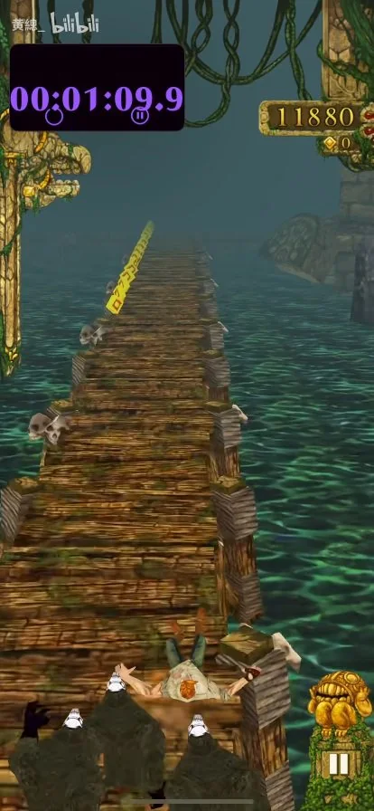
72s · 木桥
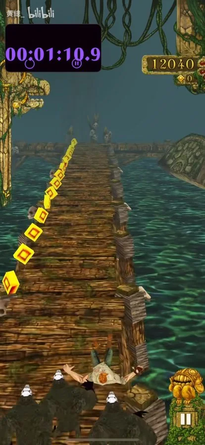
73s · 木桥
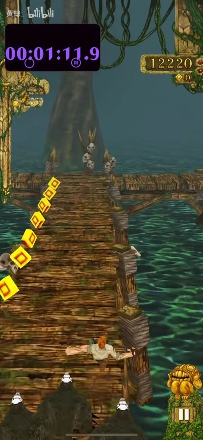
74s · 木桥
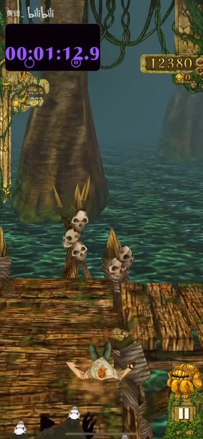
75s · 木桥
 76s · 木桥
76s · 木桥
木桥断口，底部交叉木支架清楚可见。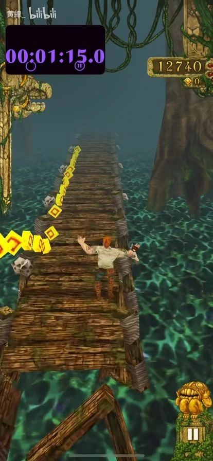
77s · 木桥
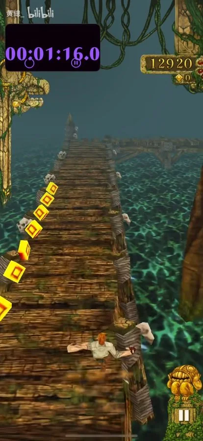
78s · 木桥
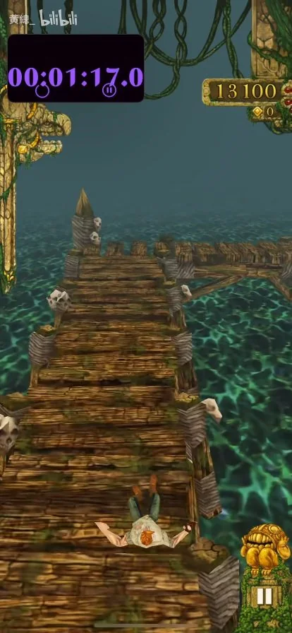
79s · 木桥
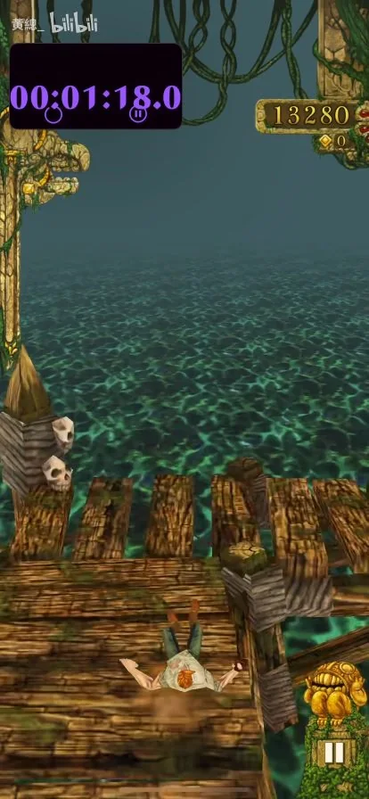
80s · 木桥
木桥直角转弯。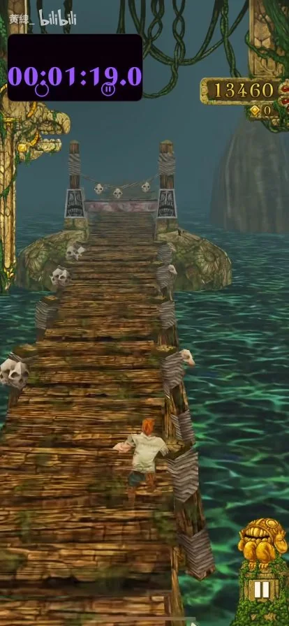
81s · 木桥
 82s · 木桥
82s · 木桥
带浮雕石片的低矮木桥横障。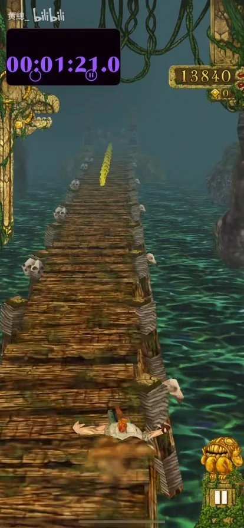
83s · 木桥
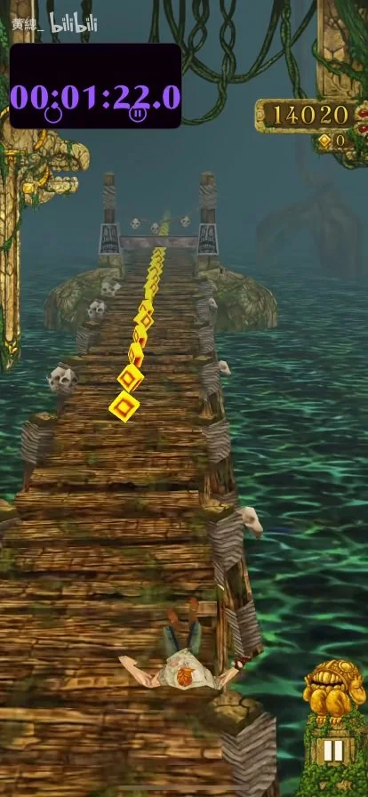
84s · 木桥
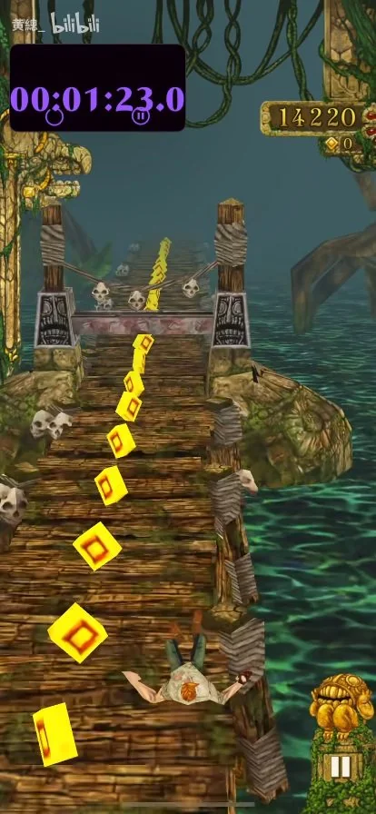
85s · 木桥
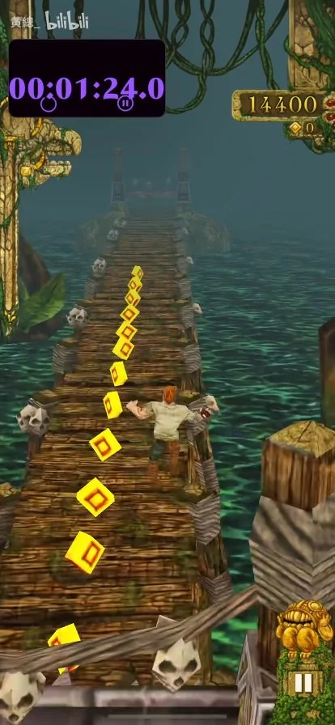
86s · 木桥
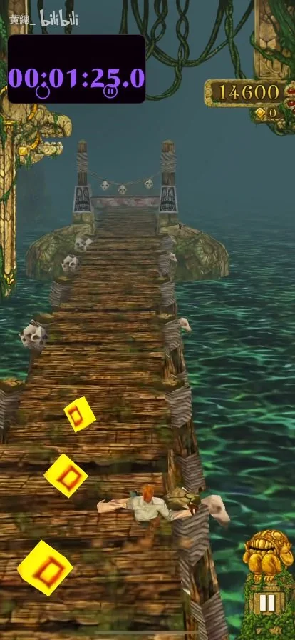
87s · 木桥
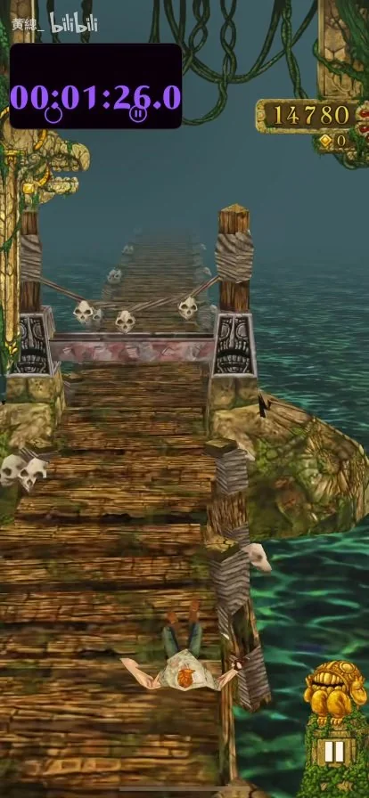
88s · 木桥
白色骷髅端头与绳索。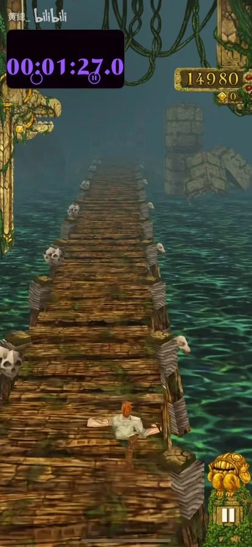
89s · 木桥